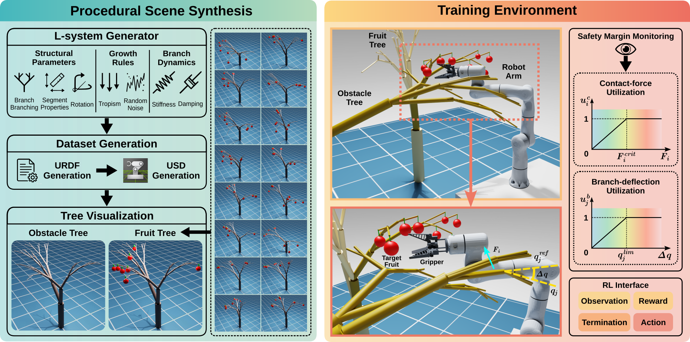
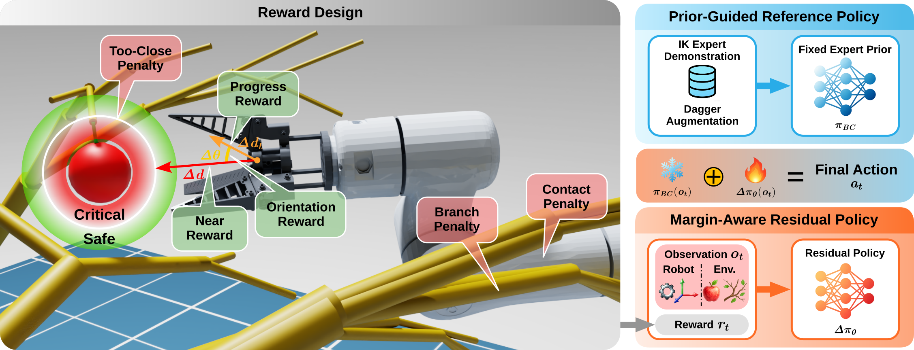
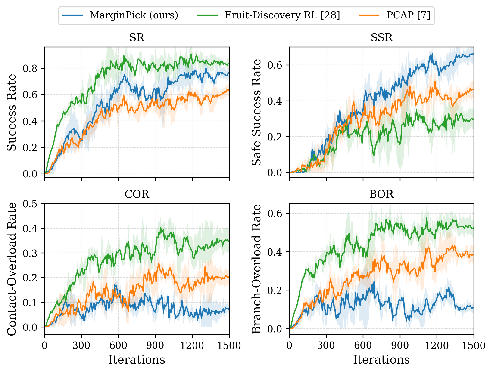
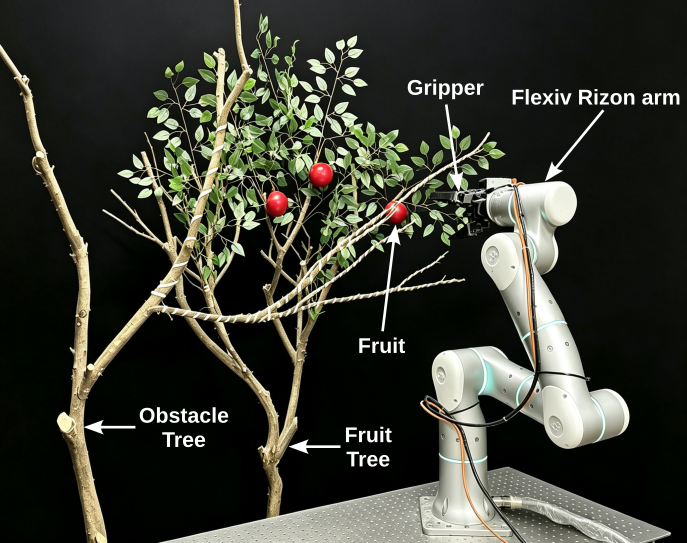

Procedural deformable canopies
L-system trees are converted to articulated branch assets with spring-actuated joints, randomized fruit placement, and obstacle-tree clutter.
IEEE Robotics and Automation Letters submission
MarginPick learns safe pre-harvest reaching by combining a behavior-cloned nominal policy with residual reinforcement learning guided by normalized robot-contact and branch-deflection utilization.
Abstract
Robotic fruit harvesting in dense, deformable canopies requires contact-rich motion through compliant vegetation. Treating every branch as an obstacle is overly conservative, while optimizing only reaching success can make policies push through vegetation with excessive contact force or branch deflection.
MarginPick converts contact force and branch deflection into normalized utilization signals, then uses them to guide a residual reinforcement learning policy on top of a behavior-cloned reaching prior. The goal is to keep mild branch interaction productive while discouraging unsafe robot-contact and plant-damage margins before critical limits are reached.
Method
MarginPick treats physical interaction as a finite budget rather than a binary collision label.

L-system trees are converted to articulated branch assets with spring-actuated joints, randomized fruit placement, and obstacle-tree clutter.
Link contact forces and branch-joint deflections are mapped to continuous utilization variables, exposing how close each interaction is to its safety limit.
A behavior-cloned IK prior supplies smooth nominal Cartesian motion, while PPO learns local residual corrections that react to contact and branch-risk signals.

Evaluation
Final quantitative tables can be added here after the review-anonymized measurements are frozen.
Reaches the pre-harvest standoff pose with the required approach orientation.
Satisfies success while keeping contact forces and branch deflections within prescribed limits.
Counts trials where at least one arm link reaches its contact-force utilization limit.
Counts trials where any target-tree or obstacle-tree branch exceeds its utilization limit.



Resources
Use this section for camera-ready resources, code, datasets, videos, and supplementary materials as they become available.